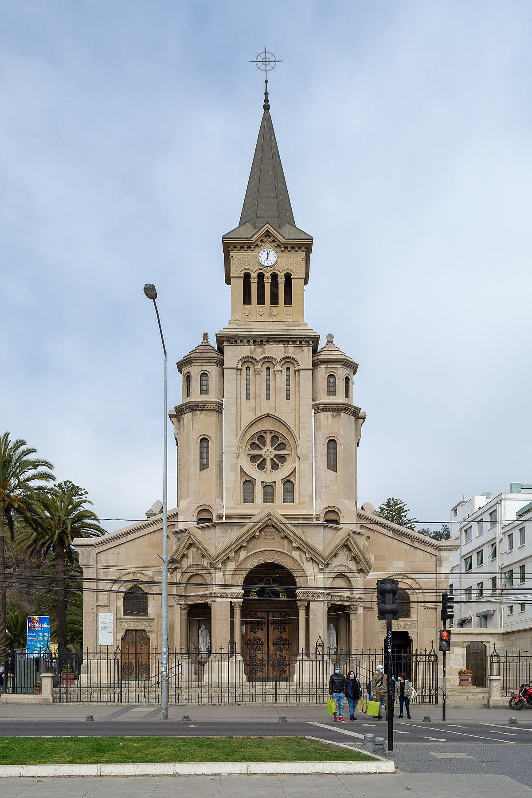
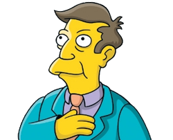

Te contamos —
Iglesia

Rector UC
La dignidad primero
Tecnología

UC lanza nueva plataforma digital
Para impulsar la ciberseguridad
Elección de Rector

Gran Canciller de la UC nombra...
A los cuatro miembros que se integran al Comité de Búsqueda